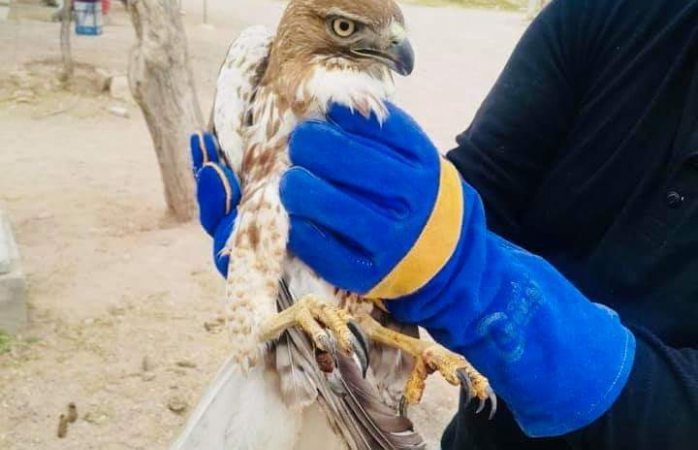
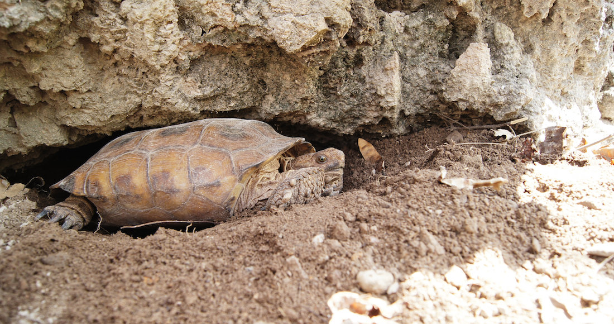

Proyectos Destacados
Recuperación del Águila Real
Nuestro programa de conservación ha logrado importantes avances en la recuperación del Águila Real, una especie emblemática de la región. A través de acciones de protección de nidos, monitoreo y concientización, hemos aumentado su población y preservado su hábitat.
Restauración del Bosque Nativo
Estamos comprometidos con la restauración y conservación de los bosques nativos de Madera. Mediante la reforestación y el manejo forestal sostenible, buscamos mantener la salud de nuestros bosques y promover la diversidad de especies.

Protección de la Tortuga del Desierto
Colaboramos estrechamente con expertos en conservación para proteger la Tortuga del Desierto, una especie en peligro de extinción. A través de la vigilancia de sus nidos, la conservación de su hábitat y la educación ambiental, trabajamos para asegurar su supervivencia.
